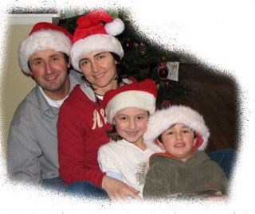

How can you say 'Happy Holidays' in Italian? Here are a few words that are commonly used this time around: Merry Christmas - Buon Natale Happy Holidays - Buone Feste Happy New Year - Buon Anno New Year's eve - Capodanno Best wishes for 2008 - I migliori auguri per il 2008 Filled with joy and peace - Pieno di gioia e serenita' Our editorial staff Francesca and Paolo together with our associate podcaster Silvia, 7 (and future talent Alessio, 4) augurano a tutti voi Buone Feste!